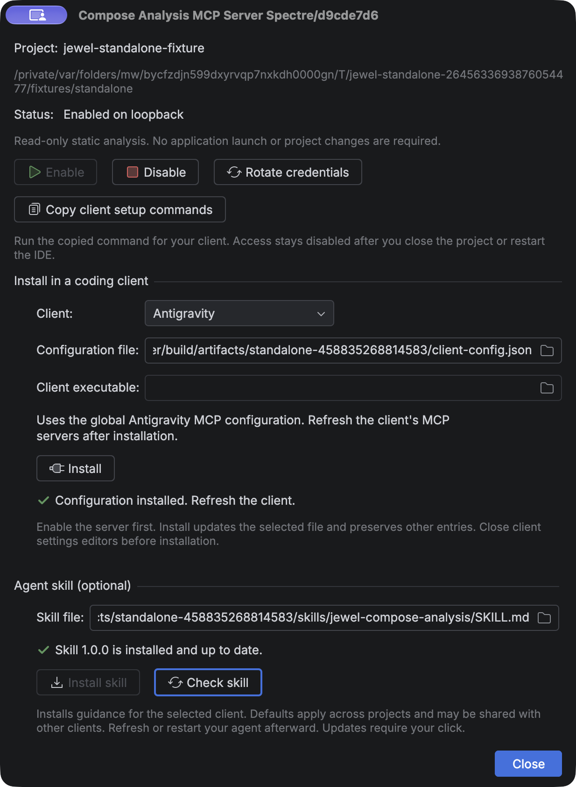

Use Compose analysis from a coding agent
Jewel Tooling exposes static Compose stability analysis through your running IDE. It uses the same engine as the editor hints. You do not need to launch your application, add a build plugin, or change a dependency.
Enable access to your project
- Install Jewel Tooling in a supported IntelliJ IDEA installation.
- Open your own Gradle or Bazel project. Import its Kotlin model and let indexing finish.
- Open Tools → Compose Analysis MCP Server….
- Check the project name and path. Select Enable.
- Under Install in a coding client, select your client. Check the configuration file path.
- Select Install. Jewel Tooling writes and verifies the configuration.
- Refresh or restart your client. Accept its own trust prompt if shown.
For Codex and Pi, check the Client executable field if automatic detection leaves it empty. You can still select Copy client setup commands for manual Codex or Claude Code setup.
Access defaults to disabled. Enable it again after you close the project or restart the IDE. The existing client configuration still works. You do not need to copy a new port or token. The endpoint is separate from live Compose inspection and other IDE MCP servers.
A working Kotlin project model is required. Missing dependencies can produce unknown findings. Bazel support uses the imported IDE model. It does not run Bazel or guess dependencies from build files.
One-click client setup

Install supports these clients. The default scope is your local user configuration. Each entry selects this IDE profile and project. Other server entries remain unchanged.
| Client | Default configuration | After installation |
|---|---|---|
| Android Studio (Gemini) | Selected Android Studio profile's mcp.json | Enable MCP Servers in Studio, then refresh its MCP settings |
| Antigravity | ~/.gemini/config/mcp_config.json | Refresh MCP servers |
| Codex | $CODEX_HOME/config.toml, or ~/.codex/config.toml | Reconnect MCP or restart the session |
| Claude Code | ~/.claude.json | Restart the session |
| Pi (pi-mcp-adapter) | $PI_CODING_AGENT_DIR/mcp.json, or ~/.pi/agent/mcp.json | Restart Pi, then inspect /mcp |
| Amp | ~/.config/amp/settings.json or .jsonc | Refresh MCP or restart the session |
| OpenCode | ~/.config/opencode/opencode.json or .jsonc | Restart the session |
| GitHub Copilot (JetBrains) | ~/.config/github-copilot/intellij/mcp.json | Refresh Copilot's MCP servers |
| GitHub Copilot (CLI) | ~/.copilot/mcp-config.json | Restart the session |
| GitHub Copilot (VS Code) | VS Code's user mcp.json | Refresh MCP servers |
The dialog resolves platform paths and relevant configuration-directory overrides. For a custom client profile, select its actual configuration file. If multiple Android Studio profiles exist, choose one explicitly. The Studio file must be outside your project, in an existing profile with an options directory. No installation changes a client's global trust or approval settings.
Pi support uses pi-mcp-adapter. If no adapter package is registered, Install runs pi install npm:pi-mcp-adapter@2.34.0. An existing registered adapter is preserved. The package step needs package-registry access. If you use another Pi extension, ask your coding agent to adapt the setup. Pi can expose the tools through the adapter's mcp proxy. Use /mcp to inspect the connection.
The optional agent skill is documented separately in Agent skill.
Android Studio and endpoint changes
Android Studio supports HTTP MCP, but not stdio. Its configuration therefore contains a bearer credential. Jewel Tooling stores that file and its backup with owner-only permissions. Do not share the Studio configuration or commit it to a repository.
Jewel Tooling updates its owned Studio entry whenever you enable the server or rotate credentials. On disable, project close, or plugin unload, it revokes access and marks the entry disabled without a credential. Refresh Studio's MCP settings after an update. An IDE crash cannot run cleanup, but the old endpoint no longer grants access. Enable again to refresh the saved entry after a restart. If you edit the entry yourself, automatic updates stop with a visible warning. Remove only the affected Jewel entry in Studio, then select Install again.
Other clients use the private discovery bridge. Their saved configurations contain no token or ephemeral port.
Existing settings and installation failures
Close client configuration editors before installation. Client applications can also write their own settings. Jewel Tooling checks for changes before and after each write. It cannot lock out an unrelated application's writer. If it detects a change, it stops and asks you to close the editor and retry. A successful installation confirms the saved configuration, not a live connection inside the external client.
JSON and JSONC installation preserves unrelated text and comments. Duplicate keys and malformed files are rejected. Jewel Tooling keeps one private backup per destination under its IDE support directory. It never restores a backup automatically over another application's changes. Files are limited to 1 MiB, except Claude Code's state file, which allows 32 MiB. Nesting is limited to 64 levels. Symbolic links and files owned by another user are rejected. Select a direct, user-owned destination instead.
Codex's installed CLI validates a private copy of its TOML configuration. Installation appends a new server table and preserves the original text. An unusual inline table, an old CLI, or a conflicting entry can prevent automatic installation. Use the copied command in that case. If an IDE move changes the Java path, remove the old named Codex entry and install again.
Retrying installation is safe. An identical entry is left unchanged; a conflicting user entry is not overwritten. If Pi installs its package but cannot write the configuration, retry to finish setup. After deleting or replacing a project, remove its old Jewel entry from each client. Uninstalling Jewel Tooling does not remove settings from other applications. Its stopped endpoint denies access.
Formats were checked against the current vendor documentation: Android Studio, Antigravity, Amp, OpenCode, Pi adapter, Copilot IDE clients, and Copilot CLI. The IDE Index MCP plugin informed the setup workflow. No source code was copied.
Manual setup for Codex or Claude Code
The IDE copies commands with the correct Java executable, bootstrap path, descriptor path, and project identity. The following paths are examples. Use the copied values for your own installation.
codex mcp add jewel-example -- '/path/to/ide/jbr/bin/java' -jar '/private/support/bootstrap.jar' '/private/support/project.properties' 'PROJECT_ID'
claude mcp add --transport stdio jewel-example -- '/path/to/ide/jbr/bin/java' -jar '/private/support/bootstrap.jar' '/private/support/project.properties' 'PROJECT_ID'Run only the command for your client. Restart its session or reconnect the server through its MCP controls. The commands use the documented Codex MCP syntax and Claude Code stdio syntax. Their argument forms were checked against the installed CLIs.
For a configuration file, use the same values. This Codex TOML is an example:
[mcp_servers.jewel_example]
command = "/path/to/ide/jbr/bin/java"
args = ["-jar", "/private/support/bootstrap.jar", "/private/support/project.properties", "PROJECT_ID"]This Claude Code JSON is an example:
{
"mcpServers": {
"jewel_example": {
"type": "stdio",
"command": "/path/to/ide/jbr/bin/java",
"args": ["-jar", "/private/support/bootstrap.jar", "/private/support/project.properties", "PROJECT_ID"]
}
}
}The copied shell commands use POSIX quoting. On Windows, use the JSON configuration with escaped backslashes or forward slashes. The launcher uses your IDE's bundled Java runtime. Copy setup again if you move or remove that IDE installation. Each descriptor selects one IDE profile and one project. Give separate endpoints separate client names. Do not replace a project identity with another project's identity. The bridge never selects the first running IDE. If you move or recreate the project, copy its setup again.
The client starts a local stdio bridge. That bridge reads private discovery data and connects to authenticated loopback HTTP. The descriptor contains a credential. Do not share it or add it to version control. The copied configuration contains no credential. A new enable operation creates a new credential and endpoint generation.
First analysis in your project
Ask your agent to follow this sequence. Tool names can have a client-specific prefix.
- Call
jewel_statuswith{}. CheckprojectRoot,projectId, andreadiness. - Call
jewel_composableswith{"file":"src/main/kotlin/example/Screen.kt"}. - Select a returned declaration ID. Call
jewel_analyzewith the same file and thatdeclarationId. - Call
jewel_explainwith the file, declaration ID, and parameter name. - Cite the declaration location, document hash, classification, evidence, and reason in your explanation.
These requests are examples:
{"file":"src/main/kotlin/example/Screen.kt","declarationId":"GENERATION:FILE_HASH:CONTENT_HASH:OFFSET"}{"file":"src/main/kotlin/example/Screen.kt","declarationId":"GENERATION:FILE_HASH:CONTENT_HASH:OFFSET","parameter":"items"}Use the actual returned ID. For an extension receiver, use the parameter name <receiver>. The explain tool describes a parameter's resolved type in context. It does not resolve arbitrary type strings.
All results use this envelope. The following is a representative excerpt, not a complete response:
{
"schemaVersion": 1,
"payload": {
"kind": "result",
"data": {
"file": "src/main/kotlin/example/Screen.kt",
"documentRevision": "42",
"contentHash": "SHA256_OF_CURRENT_DOCUMENT",
"declarations": [{
"name": "Screen",
"parameters": [{
"name": "items",
"resolvedType": "kotlin.collections.List<example.Item>",
"stability": "UNSTABLE",
"evidence": [{"code": "BUILTIN", "provenance": "builtin"}],
"reasons": [{"code": "reason.collection", "text": "The collection type does not guarantee immutability.", "locations": []}],
"incomplete": []
}],
"skippability": "NOT_ANALYZED"
}]
}
}
}Contract and evidence
The four tools are read-only. Their inputSchema and outputSchema are available through MCP tool discovery. Each success has schemaVersion: 1 and a payload with kind: "result" and data. Each operational error has kind: "error", code, message, retryable, and remedy. MCP also sets isError. Both shapes conform to the published output schema.
jewel_status reports versions, project identity, readiness, capabilities, and limits. The three analysis tools return a document snapshot with declaration and parameter details. jewel_composables includes stability summaries. jewel_explain narrows the parameter details to the selected parameter.
Every snapshot includes the document revision, SHA-256 content hash, and PSI revision. Declaration IDs belong to the endpoint generation, canonical project-relative file, and document hash. Locations use one-based lines and columns, counted in UTF-16 code units. Range ends are exclusive.
jewel_analyze analyses the named file when no selector is supplied. A range selects declarations whose names begin inside it. A zero-width range selects the innermost containing function. A range and a declaration ID cannot be used together. All three analysis tools accept an optional expectedHash to reject changed documents.
| Evidence | Meaning |
|---|---|
COMPILER_METADATA | Supported compiled metadata contributes to the classification |
DECLARED_CONTRACT | The resolved type declares a stability annotation contract |
SOURCE | The engine infers stability from supported source declarations |
BUILTIN | The engine applies a known language or library rule |
UNSUPPORTED | The available evidence does not support a conclusion |
Evidence can be mixed. Keep every evidence entry when explaining a result. A declared contract is not proof that the implementation satisfies it. Do not add @Stable or @Immutable merely to silence a finding. These annotations promise behaviour that the implementation must preserve.
UNKNOWN remains unknown. An incomplete entry explains missing metadata, unresolved types, unsupported evidence, or an analysis budget. Missing metadata is a partial finding, not a failed whole-file request. Stability does not prove compiler skippability, a recomposition count, or a performance problem. The server returns no runtime observations. skippability is NOT_ANALYZED.
Unsaved edits and limits
Analysis uses the current editor document, including unsaved edits. It does not save your source file. A write can invalidate the snapshot. On STALE_LOCATION, list declarations again and use the new ID. Dependency changes can invalidate conclusions even when the source hash stays unchanged. Request fresh analysis before making a claim.
Each request names one project-relative Kotlin file. No tool scans your repository implicitly. The limits are 1 MiB of source, 128 declarations, 256 parameters, and 1 MiB of encoded output. Two analyses can run per project. Additional analyses return BUSY. The deadline is ten seconds. Requests that exceed a limit fail explicitly. The server does not silently omit declarations.
Client cancellation stops the request. A cancelled MCP request need not receive a response. Closing a session cancels its analyses. A dropped HTTP connection alone is not a cancellation signal. Disconnected analysis still has a deadline. Idle sessions expire and do not consume capacity indefinitely.
Disable or rotate access
Select Disable in the server dialog to revoke access and stop the endpoint. Closing the project or unloading the plugin also stops it. Select Rotate credentials to replace credentials and end existing sessions. Reconnect the client afterward. Stdio clients keep the same discovery path. Jewel Tooling updates its owned Android Studio entry; refresh Studio after rotation.
Troubleshooting
| Symptom | Action |
|---|---|
| The bridge cannot connect | Open the selected project, enable MCP, and reconnect the client |
INDEXING | Wait for indexing to finish; check jewel_status again |
UNKNOWN with unresolved evidence | Fix or import the Kotlin dependency model; request fresh analysis |
METADATA_UNAVAILABLE in a parameter | Keep the result unknown; compiler evidence is not available for that classification |
STALE_LOCATION | List composables again; use the new declaration ID and hash |
BUSY | Let an existing request finish before retrying |
TIMEOUT | Wait for the IDE to become idle or analyse a smaller range |
LIMIT_EXCEEDED | Analyse a smaller file, range, or declaration |
OUTSIDE_PROJECT | Use a file inside the selected imported project |
| The wrong project appears in status | Remove that client entry and copy setup from the intended project's dialog |
| Setup fails on permissions | Use an owner-only IDE configuration directory; do not make the discovery files public |
| Access stops after rotation or restart | Re-enable if needed, then reconnect the client with its existing configuration |